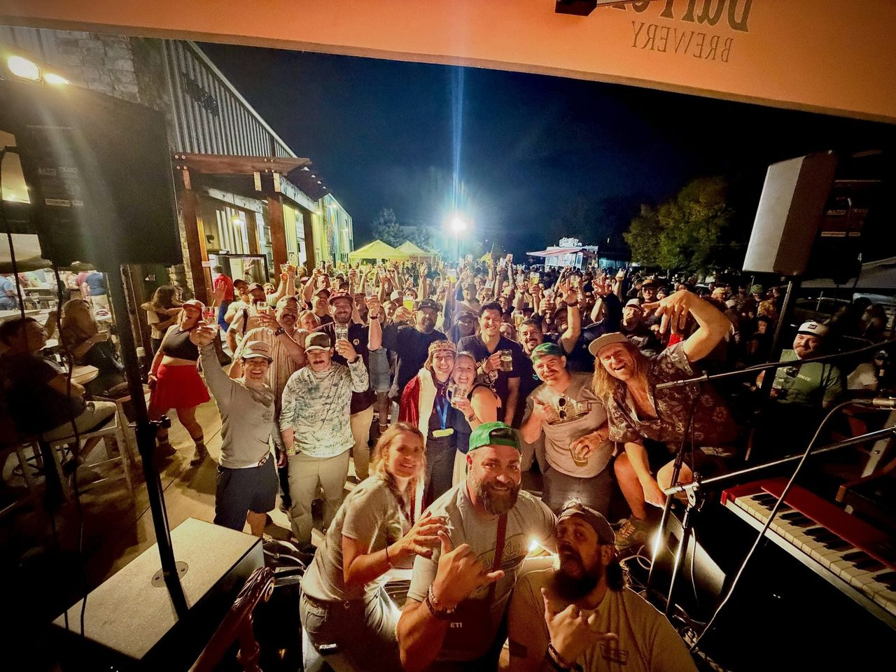
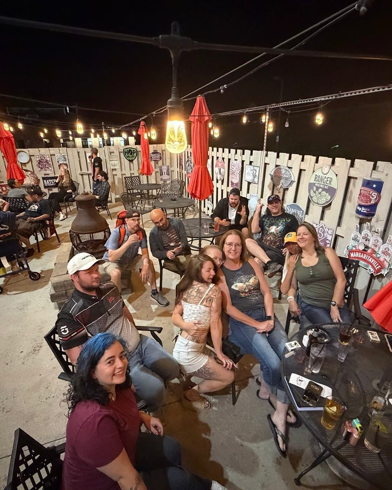
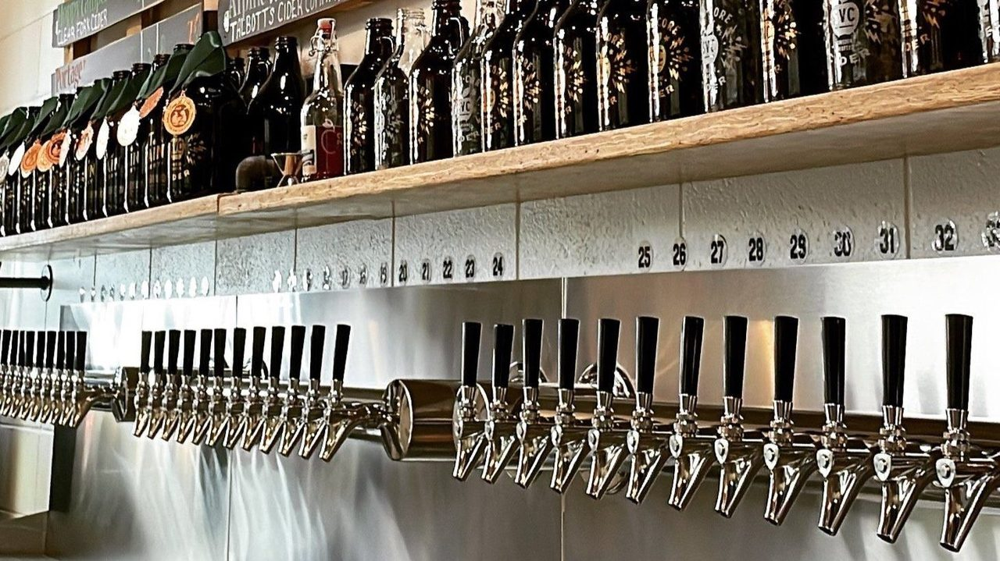
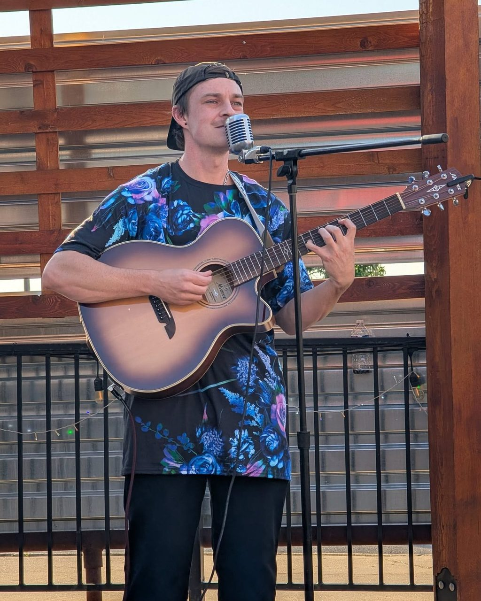
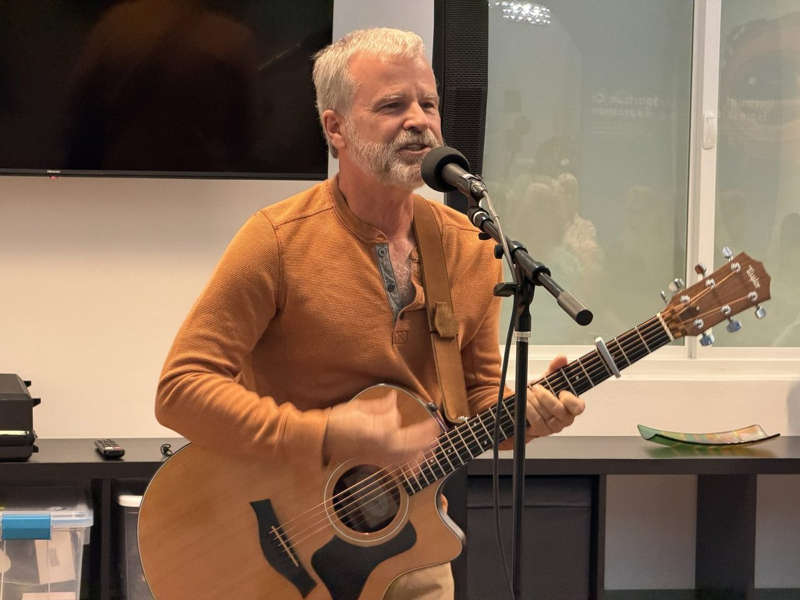

Alchemy Golden Open Mic Night
Alchemy GoldenGolden
Mondays, weekly
6:00 PM to 8:00 PM
1111 Miners Alley, Golden, CO 80401
At an open mic or a songwriter night, you bring your own act and play a short set on a stage that changes hands all night. You need a song or two you can finish, and you need to get there by the signup time.
Schedules change. Confirm with the venue or host before you go.
Each act gets two or three songs or about ten minutes, whichever comes first. Most nights welcome covers, songwriter nights want original songs, and a few run in the round, with writers taking turns. At the mixed nights, poets and comics share the list.
Most nights keep a list at the door, and some of the bigger ones take signups online ahead of time. The popular lists fill before the music starts, so get there by the signup time on the card, which is often earlier than the start time.
The host calls you up, the sound person checks that your mic and instrument are coming through, and you play your songs with a sentence or two of talk between them. Watch the host for the signal to wrap up.
82 nights
6 nights
Alchemy GoldenGolden
Mondays, weekly
6:00 PM to 8:00 PM
1111 Miners Alley, Golden, CO 80401


Misfits Sports Bar and GrillLakewood
Mondays, weekly
6:00 PM to 10:00 PM
11475 W Colfax Ave, Lakewood, CO 80215
Night Owl LoungeBroomfield
Mondays, weekly
7:00 PM to 11:00 PM
2000 W Midway Blvd, Broomfield, CO 80020


Roots Music ProjectBoulder
1st Monday of the month
7:00 PM to 9:00 PM
4747 Pearl St, Suite V3A, Boulder, CO 80301
The Bug TheatreDenver
Last Monday of the month (except sometimes December)
from 8:00 PM
3654 Navajo St
Oskar Blues Grill & Brew (Lyons)Lyons
Mondays, weekly
303 Main St, Lyons, CO 80540
14 nights


Bricks on MainLongmont
Tuesdays, weekly
5:30 PM to 8:00 PM
471 Main St, Longmont, CO 80501
Grossen Bart BreweryLongmont
Tuesdays, weekly
6:00 PM to 9:00 PM
1025 Delaware Ave, Unit A, Longmont, CO 80501


Trident Booksellers & CafeBoulder
Monthly (4th Tuesday)
6:00 PM to 8:30 PM
940 Pearl St, Boulder, CO 80302


The End Lafayette (inside Dog House Music Studios)Lafayette
4th Tuesday of the month
6:30 PM to 8:30 PM
525 Courtney Way, Lafayette, CO 80026
The End Lafayette (inside Dog House Music Studios)Lafayette
3rd Tuesday of the month
6:30 PM to 9:30 PM
525 Courtney Way, Lafayette, CO 80026


Broadway RoxyDenver
1st and last Tuesday
from 6:30 PM
554 S Broadway, Denver, CO 80209
Goosetown TavernDenver
Tuesdays, weekly
from 7:00 PM
3242 E Colfax Ave, Denver, CO 80206
Berkeley InnDenver
Tuesdays, weekly
7:00 PM to 10:00 PM
3834 Tennyson St
Sean's TavernAurora
Tuesdays, weekly
7:00 PM to 10:00 PM
10395 E Iliff Ave, Aurora, CO 80247
The AlleyLittleton
Tuesdays, weekly
7:00 PM to 10:00 PM
2420 W Main St, Littleton, CO 80120
Subjective CoffeeWestminster
3rd Tuesday monthly
8:00 PM to 10:30 PM
3695 W 72nd Ave, Westminster, CO 80030


The Attic Bar & BistroBoulder
Tuesdays, weekly
8:00 PM to 11:00 PM
949 Walnut St, Boulder, CO 80302


Velvet BanjoDenver
Tuesdays, weekly
8:00 PM to 11:00 PM
741 E Colfax Ave
RiverDenver
Tuesdays, weekly
from 9:00 PM
3500 Delgany St
23 nights


Cellar West Artisan AlesLafayette
1st Wednesday of the month
5:30 PM to 9:00 PM
778 W Baseline Rd, Lafayette, CO 80026
Superior Community CenterSuperior
2nd & 4th Wednesdays (roughly every two weeks; check town calendar)
5:30 PM to 7:45 PM
1500 Coalton Rd, Superior, CO 80027


30/70 Sports Bar & GrillLittleton
Wednesdays, weekly
from 6:00 PM
10251 W Bowles Ave Unit C, Littleton, CO 80127

Barrels and Bottles BreweryGolden
Wednesdays, custom dates
6:00 PM to 8:00 PM
1055 Orchard St, Golden, CO 80401
Cannonball Creek Brewing CompanyGolden
2nd Wednesday of the month
6:00 PM to 9:00 PM
393 N Washington Ave, Golden, CO 80403
Shoes and BrewsLongmont
Every other Wednesday
from 6:00 PM
63 S Pratt Pkwy, Longmont, CO 80501
Knotted Root Brewery - Circular LoungeDenver
Wednesdays, weekly
6:00 PM to 9:00 PM
5126 E Colfax Ave


The Flats Beer GardenGolden
1st & 3rd Wednesdays
6:00 PM to 9:30 PM
11229 CO-93, Golden, CO 80403

The Mirage Sports BarLittleton
1st & 3rd Wednesdays
6:00 PM to 10:00 PM
8340 W Coal Mine Ave, Littleton, CO 80123
Vision Quest BreweryBoulder
Wednesdays, weekly
6:00 PM to 9:00 PM
2510 47th St Unit A2, Boulder, CO 80301
Prince of Peace Church of the BrethrenLittleton
3rd Wednesday monthly
6:30 PM to 8:30 PM
7000 S Windermere St, Littleton, CO 80120


The End Lafayette (inside Dog House Music Studios)Lafayette
2nd Wednesday of the month
6:30 PM to 8:30 PM
525 Courtney Way, Lafayette, CO 80026

SAME CafeDenver
3rd Wednesday of the month
6:30 PM to 9:00 PM
2023 E Colfax Ave

St. Vrain CideryLongmont
2nd and 4th Wednesday
6:30 PM to 8:30 PM
350 Terry St, Ste 130, Longmont, CO 80501


St. Vrain CideryLongmont
2nd & 4th Wednesdays
6:30 PM to 8:30 PM
350 Terry St, Ste 130, Longmont, CO 80501
Warrior Soul Gallery & Community StudioLyons
3rd Wednesday of the month
6:30 PM to 8:30 PM
304 Main St, Unit B, Lyons, CO 80540
Henry's Bar and GrillLouisville
Wednesdays, announced date by date on the hosts' Instagram; not every week
7:00 PM to 9:30 PM
935 Pine St, Louisville, CO 80027
Lincoln's RoadhouseDenver
Wednesdays, weekly
7:00 PM to 10:00 PM
1201 S Pearl St


Renegade BrewingDenver
Last Wednesday
7:00 PM to 9:00 PM
925 W 9th Ave


Takoda TavernParker
1st & 3rd Wednesdays
7:00 PM to 10:00 PM
12365 Pine Bluffs Way, Parker, CO 80134
Colorado Mountain Kava CompanyLongmont
1st Wednesday of the month
8:00 PM to 10:00 PM
615 Ken Pratt Blvd, Longmont, CO 80501
The Karma House Kava BarLakewood
Every other Wednesday
from 8:00 PM
8402 W Colfax Ave, Lakewood, CO 80215
Lion's LairDenver
Wednesdays, weekly
8:00 PM to 12:00 AM
2022 E Colfax Ave
18 nights
The Legacy SaloonDenver
3rd Thursday
4:30 PM to 9:00 PM
4800 Packing House Rd, Denver, CO 80216


Downhill Brewing - ParkerParker
Last Thursday monthly
5:00 PM to 7:00 PM
18921 Plaza Dr, Unit 104, Parker, CO 80134
LandLocked AlesLakewood
1st & 3rd Thursdays
5:00 PM to 8:00 PM
3225 S Wadsworth Blvd, Lakewood, CO 80227
Abbott & Wallace DistillingLongmont
Thursdays, weekly
6:00 PM to 10:00 PM
350 Terry St, Suite 120, Longmont, CO 80501
Genesee Pub and BBQGolden
5th Thursday (months that have one)
from 6:00 PM
25948 Genesee Trail Rd, Golden, CO 80401

Pines Bar and Grill (Castle Pines)Castle Pines
1st & last Thursday monthly
6:00 PM to 9:00 PM
7280 Lagae Rd Suite A-111, Castle Pines, CO 80108
Rails End Beer CompanyBroomfield
3rd Thursday monthly
6:00 PM to 10:00 PM
11625 Reed Ct, Unit B, Broomfield, CO 80020
Toosteppin Saloon (TooSteppin Brewing)Boulder
Thursdays, weekly
6:00 PM to 10:00 PM
4843 Pearl St, Suite A1, Boulder, CO


Valor Peak DistilleryLongmont
Every other Thursday
6:00 PM to 8:00 PM
110 Emery St, Suite C, Longmont, CO 80501
City O' CityDenver
3rd Thursday of the month
6:30 PM to 8:30 PM
206 E 13th Ave
The Old Mine Cidery & BrewpubErie
4th Thursday of the month (plus extra dates, e.g. Nov 5 and Dec 17, 2026)
6:30 PM to 8:00 PM
500 Briggs St, Erie, CO 80516
Genesee Pub and BBQGolden
5th Thursday (months that have one)
from 7:00 PM
25948 Genesee Trail Rd, Golden, CO 80401
Crazy Mountain TaproomDenver
Thursdays, weekly
7:00 PM to 10:00 PM
1505 N Ogden St


Sheabeen Irish PubAurora
Thursdays, weekly
7:00 PM to 11:00 PM
2300 S Chambers Rd Unit 1, Aurora, CO 80014
Swallow Hill Music (Quinlan Cafe)Denver
2nd Thursday of the month
7:00 PM to 9:00 PM
71 E Yale Ave
The Woodcellar Bar & GrillEvergreen
1st and 3rd Thursday
7:00 PM to 11:00 PM
1552 Bergen Pkwy, Evergreen, CO 80439


Outback SaloonBoulder
1st & 3rd Thursdays
7:45 PM to 12:15 AM
3141 28th St, Boulder, CO 80301


Cactus Jack's Saloon & GrillEvergreen
Thursdays, weekly
from 8:00 PM
4651 Hwy 73, Evergreen, CO 80439
9 nights
Recovery Cafe LongmontLongmont
Fridays, monthly
4:00 PM to 7:00 PM
402 Kimbark St, Longmont, CO 80501
Youth on RecordDenver
1st Friday of the month
5:00 PM to 8:00 PM
1301 W 10th Ave

CBArt StudiosSuperior
1st Friday every other month
6:00 PM to 8:00 PM
406 Center Dr, Unit C, Superior, CO 80027
Unity of Boulder Spiritual Center (Fellowship Hall)Boulder
4th Friday of the month
6:00 PM to 9:00 PM
2855 Folsom St, Boulder, CO 80301


Denver Art SocietyDenver
2nd Friday of the month
7:00 PM to 10:00 PM
738 Santa Fe Dr


The Audacious SpaceDenver
1st Friday of the month
7:00 PM to 9:00 PM
1373 N Grant St
Max Taps CoHighlands Ranch
3rd Friday monthly
7:00 PM to 10:00 PM
2680 E County Line Rd, Suite A, Highlands Ranch, CO 80126
Farro Italian RestaurantCentennial
Monthly on a Friday (10/23, 11/20, 12/18)
from 7:30 PM
8230 S Holly St, Centennial, CO 80122
Sober UndergroundLittleton
Some Fridays; check the monthly calendar post
from 7:30 PM
1500 W Littleton Blvd, Littleton, CO 80120
4 nights
Sandy's Coffee & TeaLongmont
3rd Saturday of the month
10:00 AM to 12:00 PM
2130 Mountain View Ave, Suite 302, Longmont, CO 80501
Littleton Social (Aspen Grove)Littleton
Monthly (last Saturday; no October or December edition)
6:30 PM to 9:00 PM
7301 S Santa Fe Dr #718, Littleton, CO 80120
The Phoenix Denver Community Center (Champa Street Gym)Denver
2nd Saturday of the month
6:30 PM to 8:30 PM
2233 Champa St
The Green House Connection CenterDenver
2nd Saturday of the month
7:00 PM to 11:00 PM
4700 Claude Ct
8 nights
Brewability / PizzabilityEnglewood
Sundays, weekly
2:00 PM to 5:00 PM
3445 S Broadway, Englewood, CO 80113
Butterscotch StudiosLongmont
2nd Sunday of the month
2:00 PM to 4:00 PM
620 Kimbark St, Longmont, CO 80501


Green Mountain Beer CompanyLakewood
Sundays, weekly
5:00 PM to 8:45 PM
2585 S Lewis Way, Lakewood, CO 80227
Elizabeth Kitchen + BarElizabeth
Biweekly (every other Sunday)
6:00 PM to 9:00 PM
240 S Elizabeth St Unit 110, Elizabeth, CO 80107
Vine Street Pub & BreweryDenver
1st Sunday of the month
6:00 PM to 8:00 PM
1700 Vine St
Merritt WellnessDenver
2nd Sunday of the month
from 6:00 PM
2246 Irving St


The Squire LoungeDenver
Sundays, weekly
9:45 PM to Midnight
1800 E Colfax Ave, Denver, CO 80218
MECO Coffee CollectiveFrederick
Sundays, weekly
318 5th St, Frederick, CO 80530
Photos belong to the people credited on them. If one is yours and you want it down, tell me and it comes down.
The skill level on each card links here. Find your instrument, then the level that matches the night.
We finish the songs, time the set, and rehearse what to do when something goes wrong. Songwriting lessons
Inquire about a good teacher for you, and I'll recommend someone if I know one.
Inquire about a good teacher for you, and I'll recommend someone if I know one.
In a lesson or two before your first night, we cover the songs you'll play and how to fit them into ten minutes, how the signup works, and how a set goes. Once you're my student, I'll help you pick the right night, and I'll be there.
Book a lesson How a first jam goes
$75 an hour, in your home or on Zoom. You pay after the lesson.